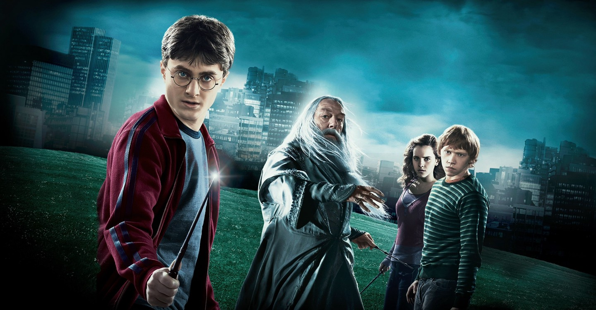

Harry Potter é um garoto órfão que vive infeliz com seus tios, os Dursleys. Ele recebe uma carta contendo um convite para ingressar em Hogwarts, uma famosa escola especializada em formar jovens bruxos. Inicialmente, Harry é impedido de ler a carta por seu tio, mas logo recebe a visita de Hagrid, o guarda-caça de Hogwarts, que chega para levá-lo até a escola. Harry adentra um mundo mágico que jamais imaginara, vivendo diversas aventuras com seus novos amigos, Rony Weasley e Hermione Granger.
Harry Potter
E A Pedra Filosofal
Galeria
Sequência dos filmes



Harry Potter e o Enigma do Príncipe. (2009)
Voldemort passa a ser uma ameaça real, tanto para o mundo dos bruxos quanto o dos trouxas. Harry suspeita que o perigo esteja dentro de Hogwarts, mas Alvo Dumbledore (Michael Gambon) está mais preocupado em prepará-lo para o confronto final com o Lorde das Trevas.
O protagonista encontra um estranho livro escolar com feitiços nunca vistos antes. Enquanto isso, Draco Malfoy (Tom Felton) se esforça para realizar uma missão dada por Voldemort. Paralelamente, Harry começa a ter um interesse cada vez maior por Gina Weasley (Bonnie Wright), irmã de Rony.

Relíquias da Morte - Parte 1. (2010)
O começo do fim.
O Lorde das Trevas está cada vez mais poderoso. O ministro da Magia é morto e, em seu lugar, assume um dos Comensais da Morte. Harry, Rony e Hermione passam a ser caçados impiedosamente e são obrigados a fugir. Longe de Hogwarts e sem a orientação e a proteção dos professores, o trio inicia uma missão para encontrar e destruir as horcruxes, que são as fontes da imortalidade de Voldemort.
Embora os três devam confiar um no outro mais do que nunca, forças das trevas ameaçam separá-los. Os protagonistas enfrentam diversas perdas enquanto se preparam para o confronto final.

Relíquias da Morte - Parte 2. (2011)
A Última Batalha...
É chegada a hora da batalha decisiva entre o bem e o mal! Harry Potter e seus amigos seguem à procura das últimas horcruxes. O trio retorna a Hogwarts, enquanto Voldemort prepara o ataque definitivo ao castelo.
O protagonista precisa encontrar forças para liderar os bruxos contra a ofensiva dos vilões. O filme que encerra a saga de Harry Potter é repleto de emoções.